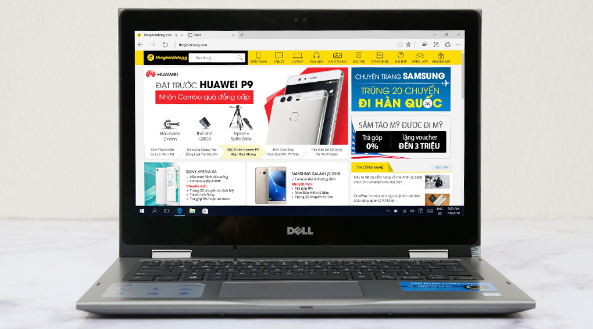

18.590.000
Thông số kỹ thuật CPU: Intel, Core i7 Skylake, 6500U, 2.50 GHz RAM: DDR3L (2 khe RAM), 4 GB, 1600 MHz Đĩa cứng: HDD, 1 TB Màn hình rộng: 14 inch, HD (1366 x 768 pixels) Cảm ứng: Không Đồ họa: AMD Radeon R5 M335, 4 GB Đĩa quang: DVD Super Multi Double Layer Webcam: 0.9 MP(16:9) Chất liệu vỏ: Vỏ nhựa Cổng giao tiếp: 2 x USB 2.0, HDMI, LAN (RJ45), USB 3.0 Kết nối khác: Bluetooth v4.0 PIN/Battery: Li-Ion 4 cell Trọng lượng: (Kg) 2.0